La olla de presión: el mundo en 1780
Un mundo rural, lento y gobernado por monarquías absolutas, que ya acumulaba las tensiones que detonaron la doble revolución: la industrial y la francesa.
Anatomía de las condiciones macroeconómicas, sociales y políticas que detonaron la doble revolución.
Basado en el análisis historiográfico estructural de la era preindustrial.
“Lo primero que debemos observar acerca del mundo de 1780-1790 es que era a la vez mucho más pequeño y mucho más grande que el nuestro”Hobsbawm (2009), p. 15
El espacio y el tiempo: grande y pequeño a la vez
El mundo de 1789 era incalculablemente vasto para sus habitantes, pero mucho más pequeño geográficamente que el actual.
La fricción de la distancia
Elige un trayecto:
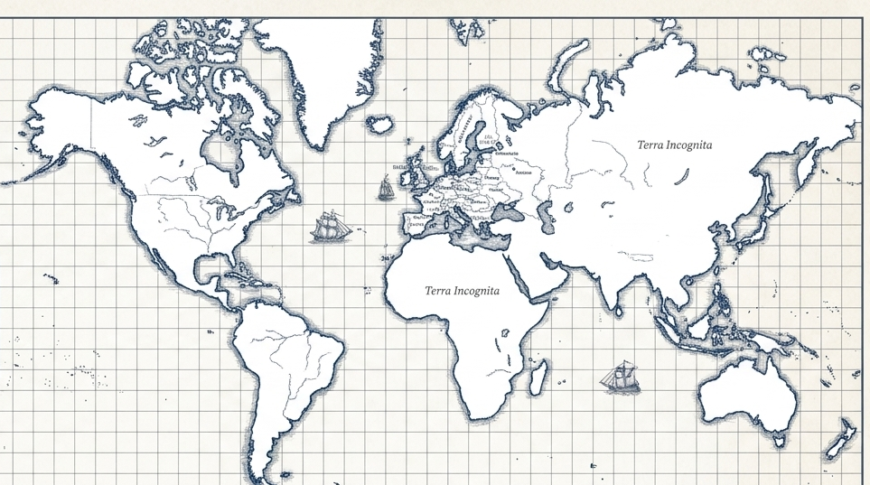
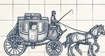
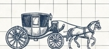
Dato clave: el transporte acuático era intermitente, pero abrumadoramente más rápido y barato que el terrestre.
Diligencia (tierra): París a Estrasburgo = 36 horas · Carruaje (tierra): Londres a Glasgow = 10 a 12 días · Noticias: la caída de la Bastilla (14 de julio) tardó 13 días en llegar a Madrid.
Un mundo preponderantemente rural
«El mundo de 1789 era preponderantemente rural y no puede comprenderse si no nos damos cuenta de este hecho»Hobsbawm (2009), p. 18
Signos vitales de la humanidad (1780)
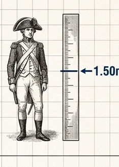
La falsa ciudad: el parasitismo provinciano
Las ciudades provincianas no eran centros industriales modernos. Sus clases medias (abogados, notarios, mercaderes) vivían a expensas de los aldeanos. Eran la culminación de la economía rural, dedicadas a concentrar la riqueza del campo sin transformarla.
Rentas · productos agrícolas · impuestos.
Control administrativo · dominio legal · reventa de bienes.
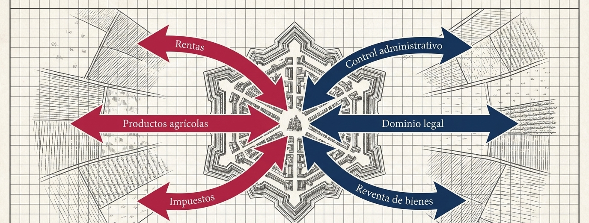
El eje del mundo conocido
«El problema agrario era por eso fundamental en el mundo de 1789, y es fácil comprender por qué la primera escuela sistemática de economistas continentales –los fisiatras franceses- consideraron indiscutible que la tierra y la renta de la tierra, eran la única fuente de ingresos»Hobsbawm (2009), p. 21
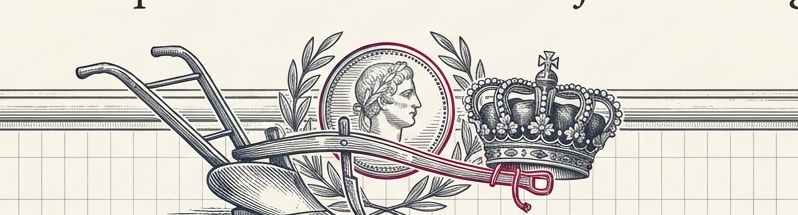
Las relaciones de propiedad de la tierra y quienes la cultivaban dictaban la estructura social, política y económica del planeta.
Matriz del orden agrario global
«Socialmente, la estructura agraria en el resto de Europa no era muy diferente»Hobsbawm (2009), p. 24
Compara las tres regiones:
Con la excepción de un sector naciente en occidente, la riqueza global dependía enteramente de la coerción política y el trabajo forzado.
El dinamismo del capital mercantil
«El mundo de la agricultura resultaba perezoso, salvo quizás para su sector capitalista. El del comercio y el de las manufacturas y las actividades técnicas e intelectuales que surgían con ellos era era confiado, animado y expansivo, así como eficientes decididas y optimistas las clases que de ambos se beneficiaban.»Hobsbawm (2009), p. 26
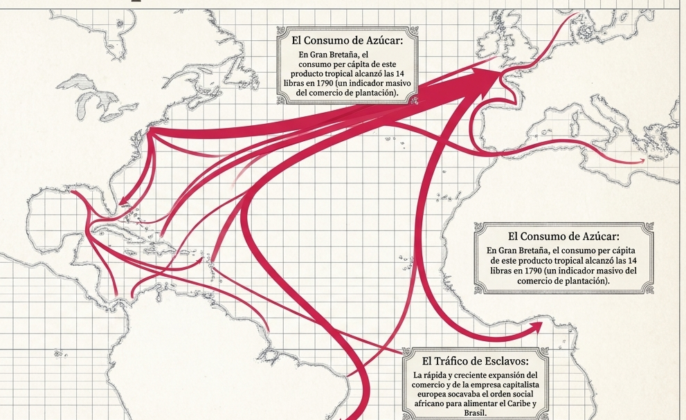
Frente a una agricultura perezosa, el comercio marítimo brillaba. Una red global impulsada por comerciantes, armadores y financieros que extraían riqueza de la periferia colonial para concentrarla en los puertos europeos (Burdeos, Bristol, Liverpool).
En Gran Bretaña, el consumo per cápita de este producto tropical alcanzó las 14 libras en 1790 (un indicador masivo del comercio de plantación).
La rápida y creciente expansión del comercio y de la empresa capitalista europea socavaba el orden social africano para alimentar el Caribe y Brasil.
El caballo de Troya del capitalismo: el sistema a domicilio
El «putting-out system» o sistema doméstico, mediante el cual el capital mercantil se infiltró en la agricultura tradicional. Pulsa cada paso:
Esta descentralización disolvió la vieja estructura artesanal, convirtió al tejedor rural en proletario, y creó a los primeros «industriales».
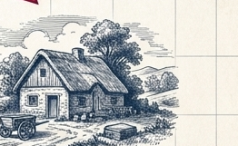
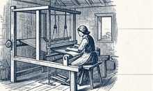
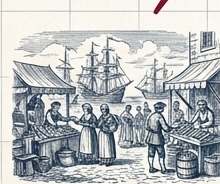
La báscula ideológica: la Ilustración
- Jerarquía de nacimiento.
- Superstición y religión medieval.
- El feudalismo y los privilegios nobiliarios.
- Racionalismo y método científico.
- Libertad individual e igualdad (lemas futuros de la revolución).
- Progreso económico y utilitarismo burgués.
La Sociedad Lunar (Lunar Society) de Birmingham: un puente vital entre el pensamiento ilustrado y la industria, agrupando a inventores y empresarios (Watt, Boulton, Wedgwood). La Ilustración no era solo filosofía; era conocimiento práctico aplicado a la producción y la riqueza.
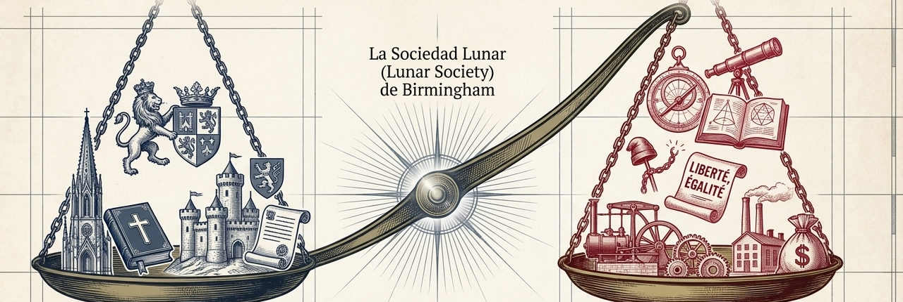
Monarquías absolutas y rivalidad geopolítica
«(…) las monarquías absolutas gobernaban en todos los países del continente europeo»Hobsbawm (2009), p. 30
El callejón sin salida del despotismo ilustrado
Los monarcas absolutos necesitaban modernización, eficiencia estatal, cohesión y ejércitos fuertes. Adoptaron a los pensadores ilustrados como ministros y planificadores.
La monarquía dependía en última instancia de la nobleza feudal y la jerarquía aristocrática. No podían liberar al campesinado sin destruir la base de su propio poder.
Las reformas desde arriba fracasaron. Era imposible resolver el conflicto entre la vieja sociedad y las nuevas fuerzas burguesas dentro del marco de los regímenes absolutistas.
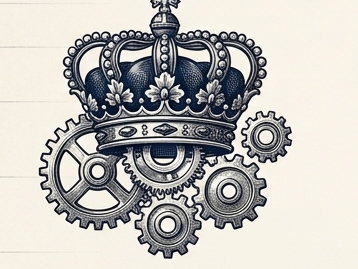
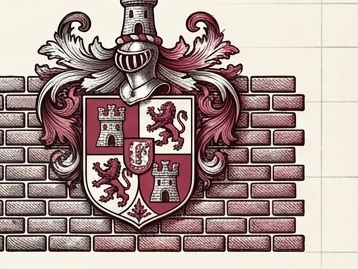
La gran rivalidad geopolítica (1689-1815)
Contexto: una guerra mundial recurrente (1689-1815) por el dominio colonial y el comercio.
- Mayor población, más recursos naturales, monarquía absoluta clásica.
- Resultado: desgastada y llevada a la bancarrota por conflictos como la Guerra de los Siete Años y su apoyo a la independencia estadounidense.
- Menor tamaño, pero con una organización económica y social enormemente superior (sistema capitalista).
- Resultado: dominio indiscutible del Atlántico y del mundo no europeo.
El conflicto internacional expuso brutalmente la fragilidad de los viejos regímenes. Gran Bretaña demostró que el futuro del poder estatal residía en el capitalismo y la burguesía, no en la aristocracia agraria.
Anatomía del conflicto y «take-off»
Monarquía absoluta + nobleza feudal + economía agraria estancada.
Naturaleza: rígida, dependiente de la coacción y los privilegios de nacimiento.
Burguesía ascendente + ideas ilustradas + capitalismo mercantil y colonial.
Naturaleza: dinámica, expansiva, basada en el mercado y la racionalidad.
La falla sísmica: el equilibrio se había roto. La estructura agraria no podía alimentar la expansión comercial; los monarcas no podían financiar sus imperios sin cobrar impuestos a los nobles; la burguesía no podía crecer bajo leyes feudales. La revolución social y económica era inevitable.
La liberación de las cadenas
La Revolución Industrial no fue un simple evento, fue el «despegue». Por primera vez en la historia humana, se rompieron los muros de la sociedad preindustrial que limitaban el poder productivo. No fue producto de una ciencia superior, sino de las condiciones estructurales (capitalismo, mercado) que finalmente detonaron en la Inglaterra de 1780.
Mueve el control para recorrer la curva desde 1780-1790: multiplicación ilimitada de hombres, multiplicación de bienes y servicios, crecimiento autosostenido.
Antes de pasar a 1789
- ¿Por qué Hobsbawm dice que el mundo de 1780 era a la vez «más pequeño y más grande» que el nuestro?
- Si el mundo era rural, ¿qué papel jugaban las ciudades provinciales?
- ¿Por qué el despotismo ilustrado no podía resolver el conflicto entre viejo orden y burguesía?
- ¿Fue el «take-off» inevitable o dependió de condiciones estructurales particulares de Inglaterra?